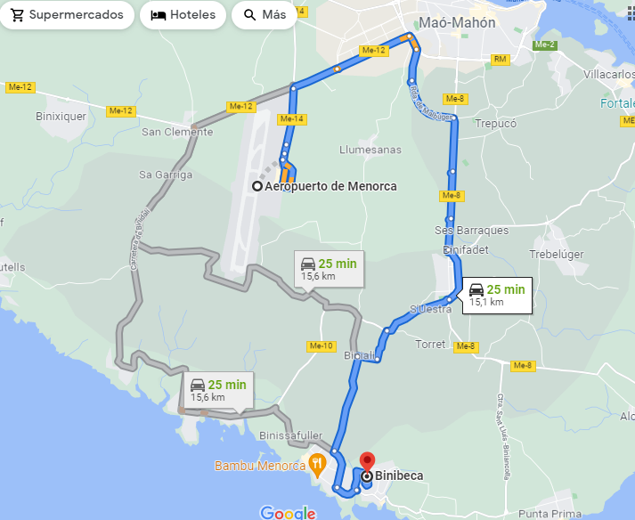

Descripció
Pou fenici relacionat amb rituals d’aigua i la gestió hídrica de la zona.
Ubicació
Situat a Sant Josep de Sa Talaia (Eivissa)

Imatges

Pou fenici relacionat amb rituals d’aigua i la gestió hídrica de la zona.
Situat a Sant Josep de Sa Talaia (Eivissa)